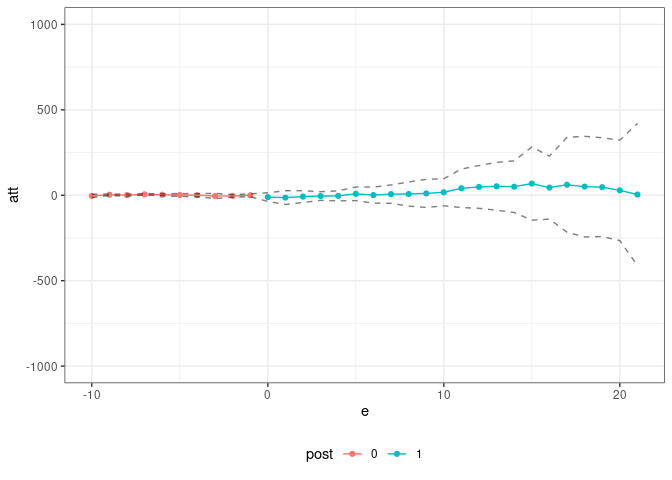
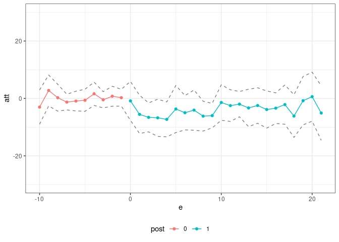

The ppe package contains code for estimating policy effects during the pandemic. It is the companion code for Callaway and Li (2023), Policy Evaluation during a Pandemic. The central idea of that paper is to compare locations who implemented some Covid-19 related policy to other locations that did not implement the policy and that had the same pre-treatment values of Covid-19 related characteristics. These characteristics definitely include (i) the current number of cases and (ii) the number of susceptible individuals (or equivalently the cumulative number of cases). They might also include demographic characteristics, population densities, region of the country, among others.
This amounts to an unconfoundedness-type strategy. In the paper, we compare it to a difference in differences strategy and argue that the unconfoundedness strategy is likely to be more appropriate to evaluate policies during the pandemic. The rationale for this argument is that epidemic models from the epidemiology literature are highly nonlinear but do not involve individual-level unobserved heterogeneity. See our five minute summary for additional discussion along these lines.
In practice, we use a doubly robust estimation procedure that estimates both the propensity score (which is related to the treatment assigment model) and an outcome regression for untreated potential outcomes (which is related to the epidemic model). An important advantage of this is that, at least to some extent, it allows us to side-step the issue of estimating a full epidemic model.
To demonstrate our approach, we provide a shortened version of the application from our paper which is about the effect of shelter-in-place orders early in the pandemic. We have state-level data about Covid-19 cases, tests, and the timing when a state adopted a shelter-in-place order.
# load the data
data(covid_data)
# formula for covariates
xformla <- ~ current + I(current^2) + region + totalTestResultsA first issue is that there are major overlap violations — for example, there are just not good comparison states for New York. As a first step, we drop those:
trim_id_list <- lapply(c(10,15,20,25,30),
did::trimmer,
tname="time.period",
idname="state_id",
gname="group",
xformla=xformla,
data=covid_data,
control_group="nevertreated",
threshold=0.95)
time_id_list <- unlist(trim_id_list)
# states that we will drop
unique(subset(covid_data, state_id %in% time_id_list)$state)
#> [1] "AL" "CA" "CO" "CT" "FL" "GA" "IL" "LA" "ME" "MI" "MO" "MS" "NH" "NJ" "NY"
#> [16] "PA" "RI" "SC" "TX" "VT" "WA"
covid_data2 <- subset(covid_data, !(state_id %in% time_id_list))Next, we use the pte package to estimate policy effects. This basically involves us only having to write a new function to compute group-time average treatment effects — for us, it is the function covid_attgt (which is essentially just a function to compute doubly robust treatment effect estimates under unconfoundedness and that include lags of some variables).
res <- pte(yname="positive",
gname="group",
tname="time.period",
idname="state_id",
data=covid_data2,
subset_fun=two_by_two_subset,
setup_pte_fun=setup_pte_basic,
attgt_fun=covid_attgt,
xformla=xformla,
max_e=21,
min_e=-10)
summary(res)
#>
#> Overall ATT:
#> ATT Std. Error [ 95% Conf. Int.]
#> 14.8882 94.6445 -170.6117 200.388
#>
#>
#> Dynamic Effects:
#> Event Time Estimate Std. Error [95% Conf. Band]
#> -10 -3.7266 3.5462 -13.1725 5.7192
#> -9 2.6607 1.5290 -1.4121 6.7335
#> -8 0.8290 2.2085 -5.0538 6.7117
#> -7 5.2843 1.7238 0.6929 9.8758 *
#> -6 2.8555 1.9809 -2.4210 8.1320
#> -5 1.3589 3.3550 -7.5775 10.2953
#> -4 0.3294 3.2940 -8.4445 9.1033
#> -3 -4.2227 5.7334 -19.4943 11.0490
#> -2 -3.8447 2.7204 -11.0910 3.4015
#> -1 -0.2234 3.1731 -8.6753 8.2285
#> 0 -10.8156 9.4857 -36.0821 14.4508
#> 1 -13.7998 15.0944 -54.0057 26.4061
#> 2 -7.8432 12.9323 -42.2899 26.6035
#> 3 -4.5541 9.4707 -29.7805 20.6722
#> 4 -3.5368 10.9555 -32.7181 25.6445
#> 5 8.5221 15.0145 -31.4709 48.5151
#> 6 1.1140 17.5362 -45.5959 47.8239
#> 7 6.6384 20.1748 -47.0996 60.3765
#> 8 7.1288 26.4804 -63.4052 77.6628
#> 9 10.8758 30.8404 -71.2715 93.0232
#> 10 17.5057 29.7749 -61.8034 96.8148
#> 11 40.8318 42.3066 -71.8570 153.5206
#> 12 48.6134 46.9495 -76.4424 173.6692
#> 13 52.4228 52.5594 -87.5757 192.4213
#> 14 50.2000 56.7979 -101.0883 201.4884
#> 15 68.2960 80.3536 -145.7358 282.3279
#> 16 44.7305 69.2848 -139.8183 229.2793
#> 17 61.4670 104.2957 -216.3376 339.2715
#> 18 50.4635 110.5002 -243.8676 344.7946
#> 19 47.3392 108.5430 -241.7786 336.4570
#> 20 28.6326 110.3186 -265.2147 322.4800
#> 21 4.3445 156.0880 -411.4153 420.1044
#> ---
#> Signif. codes: `*' confidence band does not cover 0and we can also plot the results in event study.
ggpte(res) + ylim(c(-1000,1000))
To conclude, we provide estimated effects of the effects of shelter-in-place orders on travel. In the paper, we mainly consider the case where (i) the policy can have a direct effect on travel, (ii) the policy can have a direct effect on Covid-19 cases, and (iii) Covid-19 cases can have their own effect on travel. This means that the policy can have an indirect effect on travel through its effect on Covid-19 cases. We show in the paper that neither standard DID (ignoring cases) nor DID that includes current cases as a covariate delivers a suitable estimate of the effect of the policy on travel in this case. We propose an alternative estimator that accounts for the indirect effect of the policy on travel through its effect on cases, and show code for this approach below.
oo_res <- pte(yname="retail_and_recreation_percent_change_from_baseline",
gname="group",
tname="time.period",
idname="state_id",
data=covid_data2,
subset_fun=two_by_two_subset,
setup_pte_fun=setup_pte_basic,
attgt_fun=other_outcome_attgt,
xformla=xformla,
max_e=21,
min_e=-10,
Iname="current",
adjustI=TRUE)
summary(oo_res)
#>
#> Overall ATT:
#> ATT Std. Error [ 95% Conf. Int.]
#> -3.9162 1.9992 -7.8346 0.0021
#>
#>
#> Dynamic Effects:
#> Event Time Estimate Std. Error [95% Conf. Band]
#> -10 -3.0210 1.9257 -8.9866 2.9446
#> -9 2.7846 1.7390 -2.6024 8.1716
#> -8 0.2543 1.5070 -4.4140 4.9227
#> -7 -1.2765 0.8811 -4.0059 1.4529
#> -6 -0.9085 1.1079 -4.3407 2.5237
#> -5 -0.6359 1.2406 -4.4790 3.2071
#> -4 1.6184 1.3089 -2.4363 5.6732
#> -3 -0.4660 0.9118 -3.2907 2.3588
#> -2 0.7693 1.1197 -2.6993 4.2380
#> -1 0.2643 0.9478 -2.6717 3.2002
#> 0 -0.8510 2.1891 -7.6326 5.9305
#> 1 -5.5461 2.1491 -12.2037 1.1116
#> 2 -6.5928 1.6279 -11.6356 -1.5500 *
#> 3 -6.7447 2.0879 -13.2126 -0.2769 *
#> 4 -7.2925 1.9662 -13.3834 -1.2017 *
#> 5 -3.6784 2.6473 -11.8792 4.5224
#> 6 -4.9731 1.9253 -10.9373 0.9911
#> 7 -4.0683 2.2645 -11.0835 2.9469
#> 8 -6.1649 1.6756 -11.3555 -0.9742 *
#> 9 -5.9830 1.3731 -10.2365 -1.7295 *
#> 10 -1.4185 2.0007 -7.6162 4.7792
#> 11 -2.4974 1.7783 -8.0062 3.0114
#> 12 -1.9884 1.4214 -6.3918 2.4149
#> 13 -3.3056 2.1034 -9.8216 3.2105
#> 14 -2.4633 1.9937 -8.6393 3.7127
#> 15 -3.8627 2.0857 -10.3239 2.5986
#> 16 -3.3849 1.7224 -8.7206 1.9508
#> 17 -2.1404 2.2102 -8.9872 4.7065
#> 18 -6.1309 2.3983 -13.5605 1.2987
#> 19 -0.7883 2.7191 -9.2115 7.6350
#> 20 0.6190 2.7521 -7.9066 9.1447
#> 21 -5.0789 3.0584 -14.5533 4.3954
#> ---
#> Signif. codes: `*' confidence band does not cover 0
# make an event study plot
ggpte(oo_res) + ylim(c(-30,30))